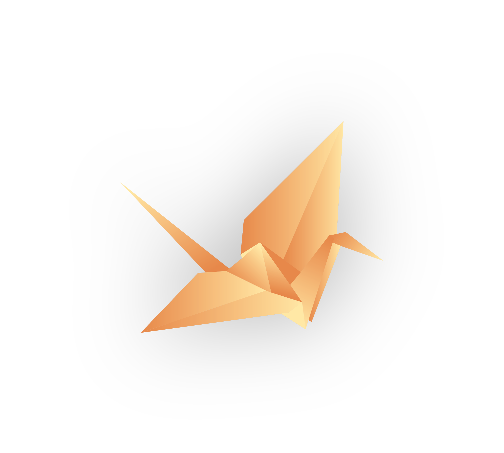

Discover Training Modules
Explore all formation modules and open any training detail page instantly.
Browse catalogueHybrid Formation Academy
A premium learning space for the Marial Apostolic Movement where responsibles discover trainings, complete modules, and access mission resources in one unified platform.
الحركة الرسولية المريمية - التنشئة المزدوجة للمسؤولينWhat Can I Do Here?
This platform is designed to answer three questions quickly: where the trainings are, where the resources are, and what your next learning action should be.
Explore all formation modules and open any training detail page instantly.
Browse catalogueFind PDFs, videos, prayers, workshop files, and announcements by module.
Open resourcesUse the learner dashboard to review completed and in-progress trainings.
Go to dashboardFormation Identity
We combine spiritual depth, educational structure, and practical leadership development so youth responsibles can serve with maturity and unity.
التنشئة هنا تجمع بين النمو الشخصي، التكوين النفسي، والقيادة الرسولية لخدمة الشبيبة بشكل مسؤول وفعّال.
Read Mission and VisionEach training cycle includes learning objectives, reflective practices, skill demonstrations, and practical application with group accompaniment.
Register to join the next cycleTraining Catalogue Preview
Foundations of personalist pedagogy and responsible accompaniment.
Open modulePsychological readiness and emotional intelligence in youth service.
Open modulePractical leadership patterns for parish youth pastoral mission.
Open moduleGroup dynamics, collaboration, and healthy team culture.
Open moduleWitness, mission identity, and everyday service rooted in faith.
Open moduleA ready template for each training with videos, quiz links, and completion UX.
Open templateResources Preview
Printable summaries, facilitator guides, and formation references.
Recordings, testimonies, and skill demonstration clips.
Prayer moments and reflective passages for mission life.
Session updates, workshop invitations, and learning links.
FUTURE PROGRESS TRACKING: resource clicks can later be logged per learner profile.
Team Preview
Role: Spiritual Formation Coordinator
Designs formation pathways and mentors youth responsibles in mission discernment.
Role: Youth Leadership Trainer
Facilitates leadership labs and supports parish-level pastoral initiatives.

Role: Digital Learning Facilitator
Curates online sessions, resources, and hybrid participation workflows.
Announcements
Thursday, 7:30 PM - onboarding and pacing guide for all trainees.
Module 3 practical groups are now available for registration.
Fresh reflective worksheet added for the personalist pedagogy module.
Contact Preview
Reach the formation coordination team for onboarding, access questions, and module guidance.